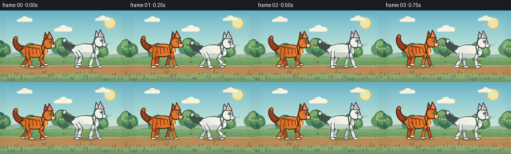
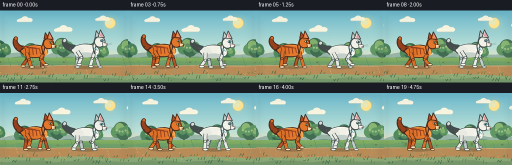

CODING AGENTS AS PIXEL WORLD MODELS
traex/DeepSeek-V4.1-Flash · instance_preservation_0004
点击播放 · 原生 RGB 像素
此结果可播放，但该运行尚未通过最终提交审核。页面展示不代表评测通过。
逐轮保存的候选
回放视频、检查图与代码变化。
每份候选均可单独播放。实际图片检查记录在下方工具轨迹中。
候选 01播放与检查图
点击播放 · 原生 RGB 像素


展开代码变化
--- 上一保存版本
+++ 本次保存版本
@@ -0,0 +1,717 @@
+"""Generate a 20-frame animated meadow scene with two running cats.
+
+The scene is drawn procedurally with PIL at 4x resolution and reduced with
+Lanczos filtering. All motion is deterministic so the file can be rerun.
+"""
+
+from __future__ import annotations
+
+import math
+from pathlib import Path
+
+import numpy as np
+from PIL import Image, ImageDraw, ImageFilter
+
+import artifact_io
+
+
+CASE_DIR = Path(__file__).resolve().parent
+WIDTH, HEIGHT = 256, 144
+FRAMES, FPS = 20, 4.0
+SS = 4
+BIG = (WIDTH * SS, HEIGHT * SS)
+
+
+def sc(value: float) -> int:
+ return int(round(value * SS))
+
+
+def box(x0: float, y0: float, x1: float, y1: float):
+ return (sc(x0), sc(y0), sc(x1), sc(y1))
+
+
+def rgba(color, alpha=255):
+ return tuple(color) + (alpha,)
+
+
+def mix(a, b, t):
+ return tuple(int(round(a[i] * (1.0 - t) + b[i] * t)) for i in range(3))
+
+
+def cubic_points(p0, p1, p2, p3, steps=18):
+ points = []
+ for index in range(steps + 1):
+ t = index / steps
+ u = 1.0 - t
+ x = u**3 * p0[0] + 3 * u * u * t * p1[0] + 3 * u * t * t * p2[0] + t**3 * p3[0]
+ y = u**3 * p0[1] + 3 * u * u * t * p1[1] + 3 * u * t * t * p2[1] + t**3 * p3[1]
+ points.append((x, y))
+ return points
+
+
+def chain(start, segments, steps=14):
+ result = [start]
+ current = start
+ for c1, c2, end in segments:
+ result.extend(cubic_points(current, c1, c2, end, steps)[1:])
+ current = end
+ return result
+
+
+def scaled(points, origin, scale, facing=1):
+ ox, oy = origin
+ return [(ox + facing * x * scale, oy + y * scale) for x, y in points]
+
+
+def polygon(draw, points, fill, outline=None, width=1):
+ pts = [(sc(x), sc(y)) for x, y in points]
+ draw.polygon(pts, fill=fill)
+ if outline is not None:
+ draw.line(pts + [pts[0]], fill=outline, width=sc(width), joint="curve")
+
+
+def ellipse(draw, bounds, fill, outline=None, width=1):
+ draw.ellipse(box(*bounds), fill=fill, outline=outline, width=sc(width))
+
+
+def line(draw, points, fill, width=1):
+ draw.line([(sc(x), sc(y)) for x, y in points], fill=fill, width=max(1, sc(width)), joint="curve")
+
+
+def circle(draw, center, radius, fill, outline=None, width=1):
+ x, y = center
+ r = radius
+ draw.ellipse(box(x - r, y - r, x + r, y + r), fill=fill, outline=outline, width=max(1, sc(width)))
+
+
+def arc(draw, bounds, start, end, fill, width=1):
+ draw.arc(box(*bounds), start=start, end=end, fill=fill, width=max(1, sc(width)))
+
+
+def ik_joint(pivot, target, upper, lower, bend):
+ px, py = pivot
+ tx, ty = target
+ dx, dy = tx - px, ty - py
+ distance = max(1.0, min(math.hypot(dx, dy), upper + lower - 0.01))
+ base = math.atan2(dy, dx)
+ cosine = (upper * upper + distance * distance - lower * lower) / (2 * upper * distance)
+ offset = math.acos(max(-1.0, min(1.0, cosine)))
+ angle = base + bend * offset
+ return (px + upper * math.cos(angle), py + upper * math.sin(angle))
+
+
+def draw_tail(draw, origin, scale, facing, phase, colors, style):
+ root = (-28, -6)
+ if style == "orange":
+ tip = (-43, -31 + 2.0 * math.sin(phase))
+ c1 = (-42, -10 + 1.8 * math.cos(phase))
+ c2 = (-48, -25 + 2.0 * math.sin(phase + 0.4))
+ else:
+ tip = (-47, -22 + 2.5 * math.sin(phase + 0.8))
+ c1 = (-43, -8 + 2.0 * math.cos(phase + 0.2))
+ c2 = (-51, -18 + 2.5 * math.sin(phase + 1.0))
+ local = cubic_points(root, c1, c2, tip, 24)
+ points = scaled(local, origin, scale, facing)
+ count = len(points)
+ for index, point in enumerate(points):
+ u = index / max(1, count - 1)
+ radius = (6.7 - 3.7 * u) * scale
+ outline_r = radius + 1.45
+ circle(draw, point, outline_r, colors["outline"])
+ circle(draw, point, radius, colors["tail"])
+ if style == "orange":
+ for u in (0.23, 0.42, 0.61, 0.78):
+ point = points[int(u * (count - 1))]
+ radius = (6.7 - 3.7 * u) * scale
+ circle(draw, point, radius * 0.92, colors["stripe"])
+ else:
+ tip_point = points[-3]
+ circle(draw, tip_point, 2.6 * scale, colors["tail_tip"])
+
+
+def draw_leg(draw, pivot, target, upper, lower, width, fill, outline, paw, bend, far=False):
+ knee = ik_joint(pivot, target, upper, lower, bend)
+ points = [pivot, knee, target]
+ line(draw, points, outline, width + 2.2)
+ line(draw, points, fill, width)
+ circle(draw, knee, width * 0.52, fill, outline, 1.0)
+ paw_center = (target[0] + 1.5, target[1] - 0.2)
+ ellipse(
+ draw,
+ (paw_center[0] - width * 0.9, paw_center[1] - width * 0.48,
+ paw_center[0] + width * 1.05, paw_center[1] + width * 0.52),
+ paw,
+ outline,
+ 1.0,
+ )
+ if far:
+ # A small ankle highlight keeps the far legs from turning into a blob.
+ line(draw, [knee, ((knee[0] + target[0]) * 0.5, (knee[1] + target[1]) * 0.5)],
+ mix(fill, (255, 255, 255), 0.13), 1.2)
+
+
+def draw_cat(draw, cx, cy, scale, palette, phase, frame_index, ground_y, style):
+ facing = 1
+ origin = (cx, cy)
+ outline = palette["outline"]
+ body_fill = palette["body"]
+
+ # Tail and far-side limbs are painted behind the torso.
+ draw_tail(draw, origin, scale, facing, phase, palette, style)
+ bob = 0.8 * math.sin(phase * 2.0 + 0.5)
+ shoulder = (cx + 19 * scale, cy + (2.0 + bob) * scale)
+ hip = (cx - 19 * scale, cy + (1.0 + bob) * scale)
+ ground_local = (ground_y - cy) / scale
+ stride = 10.4
+ lift = 5.6
+
+ leg_specs = [
+ ("front_far", shoulder, phase + math.pi, 1, True, 15.5, 16.0, 5.1),
+ ("hind_far", hip, phase + 1.5 * math.pi, -1, True, 16.5, 17.0, 5.8),
+ ]
+ for name, pivot, leg_phase, bend, far, upper, lower, width in leg_specs:
+ foot = (
+ pivot[0] + math.sin(leg_phase) * stride * scale,
+ ground_y - max(0.0, math.cos(leg_phase)) * lift * scale,
+ )
+ draw_leg(
+ draw, pivot, foot, upper * scale, lower * scale, width * scale,
+ palette["far_leg"], outline, palette["far_paw"], bend, True,
+ )
+
+ body = chain(
+ (-30, -5),
+ [
+ ((-18, -17), (9, -19), (23, -10)),
+ ((30, -2), (30, 5), (20, 9)),
+ ((5, 15), (-18, 14), (-28, 4)),
+ ((-33, 0), (-34, -5), (-30, -5)),
+ ],
+ )
+ polygon(draw, scaled(body, origin, scale, facing), body_fill, outline, 2.0)
+
+ # Rump and chest volumes, kept subtle so the silhouette stays clean.
+ ellipse(
+ draw,
+ (cx - 27 * scale, cy - 11 * scale, cx - 5 * scale, cy + 12 * scale),
+ mix(body_fill, palette["shade"], 0.18),
+ None,
+ )
+ ellipse(
+ draw,
+ (cx + 8 * scale, cy - 10 * scale, cx + 28 * scale, cy + 10 * scale),
+ mix(body_fill, palette["light"], 0.25),
+ None,
+ )
+ spine = chain(
+ (-25, -8),
+ [((-13, -16), (7, -16), (20, -9))],
+ 12,
+ )
+ line(draw, scaled(spine, origin, scale, facing), palette["light"], 1.45)
+
+ # Fur markings and chest ruff.
+ if style == "orange":
+ for index, x in enumerate((-22, -14, -6, 2, 10)):
+ top = -11 - 2.2 * math.sin(index * 0.9)
+ bottom = 6 + 1.7 * math.cos(index * 0.7)
+ stripe = [(-30 + index * 3, top), (x, top + 3), (x + 1.8, bottom)]
+ line(draw, scaled(stripe, origin, scale, facing), palette["stripe"], 2.0)
+ ellipse(
+ draw,
+ (cx + 15 * scale, cy - 7 * scale, cx + 28 * scale, cy + 9 * scale),
+ palette["light"], None,
+ )
+ for index in range(3):
+ line(
+ draw,
+ [(cx + (16 + index * 3) * scale, cy + 1 * scale),
+ (cx + (14 + index * 4) * scale, cy + 9 * scale)],
+ palette["shade"], 1.1,
+ )
+ else:
+ ellipse(
+ draw,
+ (cx - 18 * scale, cy + 3 * scale, cx + 17 * scale, cy + 14 * scale),
+ palette["shade"], None,
+ )
+ ellipse(
+ draw,
+ (cx + 13 * scale, cy - 6 * scale, cx + 28 * scale, cy + 9 * scale),
+ palette["light"], None,
+ )
+ for index in range(4):
+ x = cx + (14 + index * 2.5) * scale
+ line(draw, [(x, cy + 0.5 * scale), (x - 2 * scale, cy + 7 * scale)],
+ palette["shade"], 0.9)
+
+ # Near-side limbs.
+ leg_specs = [
+ ("front_near", shoulder, phase, 1, False, 15.5, 16.0, 5.5),
+ ("hind_near", hip, phase + 0.5 * math.pi, -1, False, 16.5, 17.0, 6.1),
+ ]
+ for name, pivot, leg_phase, bend, far, upper, lower, width in leg_specs:
+ foot = (
+ pivot[0] + math.sin(leg_phase) * stride * scale,
+ ground_y - max(0.0, math.cos(leg_phase)) * lift * scale,
+ )
+ draw_leg(
+ draw, pivot, foot, upper * scale, lower * scale, width * scale,
+ palette["near_leg"], outline, palette["near_paw"], bend, False,
+ )
+
+ # Neck and head.
+ head_bob = 0.9 * math.sin(phase + 0.35)
+ hx = cx + (30.5 + 0.55 * math.cos(phase)) * scale
+ hy = cy + (-19.0 + head_bob) * scale
+ neck = [
+ (cx + 15 * scale, cy - 11 * scale),
+ (hx - 11 * scale, hy - 8 * scale),
+ (hx - 9 * scale, hy + 8 * scale),
+ (cx + 18 * scale, cy + 6 * scale),
+ ]
+ polygon(draw, neck, body_fill, outline, 2.0)
+
+ far_ear = [
+ (hx - 11 * scale, hy - 10 * scale),
+ (hx - 8 * scale, hy - 25 * scale),
+ (hx + 1 * scale, hy - 12 * scale),
+ ]
+ polygon(draw, far_ear, palette["far_leg"], outline, 1.7)
+ ellipse(
+ draw,
+ (hx - 13 * scale, hy - 13 * scale, hx + 12 * scale, hy + 12 * scale),
+ body_fill, outline, 2.0,
+ )
+ near_ear = [
+ (hx - 4 * scale, hy - 11 * scale),
+ (hx + 1 * scale, hy - 27 * scale),
+ (hx + 10 * scale, hy - 10 * scale),
+ ]
+ polygon(draw, near_ear, body_fill, outline, 1.8)
+ inner_ear = [
+ (hx + 0.0 * scale, hy - 13 * scale),
+ (hx + 2.0 * scale, hy - 23 * scale),
+ (hx + 7.0 * scale, hy - 11 * scale),
+ ]
+ polygon(draw, inner_ear, palette["ear_inner"], None)
+
+ # Muzzle projects forward and slightly down, with a tiny smiling mouth.
+ muzzle = [
+ (hx + 5 * scale, hy + 1 * scale),
+ (hx + 16 * scale, hy + 3 * scale),
+ (hx + 15 * scale, hy + 9 * scale),
+ (hx + 7 * scale, hy + 10 * scale),
+ ]
+ polygon(draw, muzzle, palette["muzzle"], outline, 1.3)
+ nose = [
+ (hx + 14.0 * scale, hy + 2.4 * scale),
+ (hx + 17.0 * scale, hy + 2.6 * scale),
+ (hx + 15.4 * scale, hy + 5.0 * scale),
+ ]
+ polygon(draw, nose, palette["nose"], None)
+ line(
+ draw,
+ [(hx + 15.3 * scale, hy + 5.0 * scale),
+ (hx + 13.8 * scale, hy + 7.2 * scale),
+ (hx + 11.8 * scale, hy + 6.8 * scale)],
+ outline, 1.0,
+ )
+ line(
+ draw,
+ [(hx + 15.2 * scale, hy + 5.1 * scale),
+ (hx + 16.2 * scale, hy + 7.2 * scale),
+ (hx + 14.4 * scale, hy + 8.0 * scale)],
+ outline, 1.0,
+ )
+
+ # Eye, brow and whiskers.
+ eye_center = (hx + 4.3 * scale, hy - 3.4 * scale)
+ ellipse(
+ draw,
+ (eye_center[0] - 4.2 * scale, eye_center[1] - 3.0 * scale,
+ eye_center[0] + 4.2 * scale, eye_center[1] + 3.0 * scale),
+ palette["eye"], outline, 1.0,
+ )
+ ellipse(
+ draw,
+ (eye_center[0] - 1.0 * scale, eye_center[1] - 2.5 * scale,
+ eye_center[0] + 1.2 * scale, eye_center[1] + 2.4 * scale),
+ palette["pupil"], None,
+ )
+ circle(draw, (eye_center[0] - 1.3 * scale, eye_center[1] - 1.2 * scale),
+ 0.8 * scale, (255, 255, 248))
+ line(
+ draw,
+ [(hx - 3 * scale, hy - 8 * scale), (hx + 4 * scale, hy - 9 * scale),
+ (hx + 9 * scale, hy - 7 * scale)],
+ palette["stripe"], 1.1,
+ )
+ if style == "orange":
+ for offset in (-1.2, 0.0, 1.2):
+ line(
+ draw,
+ [(hx + 8 * scale, hy - 9 * scale),
+ (hx + (8 + offset) * scale, hy - 4 * scale)],
+ palette["stripe"], 0.9,
+ )
+ for index, yoff in enumerate((-1.0, 1.0, 3.0)):
+ start = (hx + 14.0 * scale, hy + (5.0 + yoff * 0.35) * scale)
+ end = (hx + (26.0 + index * 0.5) * scale, hy + (2.5 + yoff) * scale)
+ line(draw, [start, end], palette["whisker"], 0.55)
+
+ # The white cat gets a small pale-blue collar highlight for instant identity.
+ if style == "white":
+ line(
+ draw,
+ [(cx + 17 * scale, cy - 7 * scale), (cx + 22 * scale, cy - 5 * scale),
+ (cx + 25 * scale, cy - 1 * scale)],
+ palette["accent"], 2.0,
+ )
+
+
+def sky_image() -> Image.Image:
+ y = np.linspace(0.0, 1.0, HEIGHT * SS, dtype=np.float32)[:, None, None]
+ top = np.array([105, 183, 203], dtype=np.float32)
+ middle = np.array([190, 225, 215], dtype=np.float32)
+ horizon = np.array([249, 224, 178], dtype=np.float32)
+ lower = np.array([205, 214, 160], dtype=np.float32)
+ blend_top = np.clip(y / 0.53, 0.0, 1.0)
+ blend_horizon = np.clip((y - 0.53) / 0.20, 0.0, 1.0)
+ blend_low = np.clip((y - 0.73) / 0.27, 0.0, 1.0)
+ colors = top * (1 - blend_top) + middle * blend_top
+ colors = colors * (1 - blend_horizon) + horizon * blend_horizon
+ colors = colors * (1 - blend_low) + lower * blend_low
+ colors = np.broadcast_to(colors, (HEIGHT * SS, WIDTH * SS, 3)).astype(np.uint8)
+ return Image.fromarray(colors, "RGB").convert("RGBA")
+
+
+def overlay_layer(size=BIG):
+ return Image.new("RGBA", size, (0, 0, 0, 0))
+
+
+def add_glow(image, center, radius, color, strength=110):
+ layer = overlay_layer()
+ draw = ImageDraw.Draw(layer)
+ x, y = center
+ for step in range(12, 0, -1):
+ u = step / 12.0
+ r = radius * u
+ alpha = int(strength * (1.0 - u) ** 1.8)
+ draw.ellipse(box(x - r, y - r, x + r, y + r), fill=rgba(color, alpha))
+ layer = layer.filter(ImageFilter.GaussianBlur(sc(2.0)))
+ return Image.alpha_composite(image, layer)
+
+
+def draw_cloud(draw, x, y, scale, tint=(255, 247, 224, 235)):
+ # Flat-bottomed cumulus clusters with a warm rim.
+ ellipse(draw, (x - 20 * scale, y - 6 * scale, x + 5 * scale, y + 7 * scale), tint, None)
+ ellipse(draw, (x - 10 * scale, y - 12 * scale, x + 13 * scale, y + 7 * scale), tint, None)
+ ellipse(draw, (x + 4 * scale, y - 7 * scale, x + 26 * scale, y + 7 * scale), tint, None)
+ ellipse(draw, (x - 25 * scale, y - 3 * scale, x - 9 * scale, y + 7 * scale), tint, None)
+ line(draw, [(x - 23 * scale, y + 6.5 * scale), (x + 24 * scale, y + 6.5 * scale)],
+ (238, 211, 176, 105), 1.2)
+
+
+def draw_tree(draw, x, base_y, height, phase, color_shift=0):
+ trunk_color = (91, 73, 55, 255)
+ dark = mix((50, 100, 77), (63, 108, 82), color_shift)
+ mid = mix((74, 130, 91), (88, 143, 96), color_shift)
+ light = mix((111, 158, 96), (127, 173, 107), color_shift)
+ sway = 0.8 * math.sin(phase + x * 0.03)
+ trunk = [
+ (x - 1.8, base_y),
+ (x - 1.1 + sway * 0.2, base_y - height * 0.55),
+ (x + 1.5 + sway * 0.4, base_y - height * 0.72),
+ (x + 2.5, base_y),
+ ]
+ polygon(draw, trunk, trunk_color, None)
+ line(draw, [(x - 4, base_y - height * 0.48), (x - 10, base_y - height * 0.67)],
+ trunk_color, 2.0)
+ line(draw, [(x + 2, base_y - height * 0.56), (x + 9, base_y - height * 0.73)],
+ trunk_color, 1.8)
+ clusters = [
+ (x - 12 + sway, base_y - height * 0.73, 12),
+ (x - 3 + sway, base_y - height * 0.88, 15),
+ (x + 9 + sway, base_y - height * 0.78, 12),
+ (x + 1 + sway, base_y - height * 0.66, 14),
+ (x + 14 + sway, base_y - height * 0.68, 8),
+ ]
+ for index, (cx, cy, radius) in enumerate(clusters):
+ circle(draw, (cx, cy), radius, dark if index % 2 else mid)
+ for index, (cx, cy, radius) in enumerate(clusters):
+ circle(draw, (cx - radius * 0.2, cy - radius * 0.25), radius * 0.58,
+ light if index in (1, 4) else mid)
+ for index in range(5):
+ circle(draw, (x - 12 + index * 6, base_y - height * 0.83 + math.sin(index) * 3),
+ 2.0, (151, 187, 112, 200))
+
+
+def draw_background(frame_index: int):
+ image = sky_image()
+ t = frame_index
+ image = add_glow(image, (220, 25), 25, (255, 214, 117), 110)
+
+ cloud_layer = overlay_layer()
+ cd = ImageDraw.Draw(cloud_layer)
+ cloud_specs = [(-8, 28, 0.8), (74, 19, 0.62), (151, 38, 0.72), (230, 17, 0.58)]
+ for base_x, y, scale in cloud_specs:
+ x = (base_x - t * 0.35) % 310 - 25
+ draw_cloud(cd, x, y, scale)
+ image = Image.alpha_composite(image, cloud_layer)
+
+ sun_layer = overlay_layer()
+ sd = ImageDraw.Draw(sun_layer)
+ circle(sd, (220, 25), 10.5, (255, 225, 141, 255))
+ circle(sd, (217.5, 22.0), 7.0, (255, 242, 184, 185))
+ image = Image.alpha_composite(image, sun_layer)
+
+ # Far ridges and a second, darker treeline establish depth.
+ far = overlay_layer()
+ fd = ImageDraw.Draw(far)
+ ridge = chain(
+ (-8, 96),
+ [
+ ((20, 81), (45, 80), (67, 93)),
+ ((85, 101), (103, 77), (128, 82)),
+ ((154, 88), (173, 72), (195, 84)),
+ ((218, 95), (242, 80), (268, 91)),
+ ],
+ 16,
+ )
+ polygon(fd, ridge + [(268, 105), (-8, 105)], (151, 180, 167, 255), None)
+ ridge2 = chain(
+ (-8, 102),
+ [
+ ((25, 90), (52, 89), (75, 98)),
+ ((98, 106), (122, 88), (146, 93)),
+ ((170, 99), (191, 87), (213, 95)),
+ ((235, 103), (253, 91), (268, 97)),
+ ],
+ 16,
+ )
+ polygon(fd, ridge2 + [(268, 111), (-8, 111)], (105, 151, 124, 255), None)
+ image = Image.alpha_composite(image, far)
+
+ # Midground trees scroll slowly, keeping the cats anchored in the scene.
+ tree_layer = overlay_layer()
+ td = ImageDraw.Draw(tree_layer)
+ tree_specs = [(18, 35, 0.0), (82, 28, 0.5), (145, 40, 1.1), (214, 31, 0.8), (275, 37, 1.6)]
+ for base_x, height, color_shift in tree_specs:
+ x = (base_x - t * 1.1) % 310 - 18
+ draw_tree(td, x, 105, height, t * 0.12, color_shift)
+ image = Image.alpha_composite(image, tree_layer)
+
+ # Meadow and the running path.
+ field_layer = overlay_layer()
+ fld = ImageDraw.Draw(field_layer)
+ field_top = 94
+ y_values = np.linspace(field_top, HEIGHT, HEIGHT * SS - sc(field_top), dtype=np.float32)[:, None]
+ field_gradient = np.zeros((HEIGHT * SS - sc(field_top), WIDTH * SS, 4), dtype=np.uint8)
+ for row, y in enumerate(y_values[:, 0]):
+ u = (y - field_top) / (HEIGHT - field_top)
+ color = mix((133, 176, 100), (57, 112, 71), min(1.0, u * 0.95))
+ field_gradient[row, :, :3] = color
+ field_gradient[row, :, 3] = 255
+ field_image = Image.fromarray(field_gradient, "RGBA")
+ field_layer.alpha_composite(field_image, (0, sc(field_top)))
+ fld = ImageDraw.Draw(field_layer)
+
+ # Rolling contour bands.
+ for band_y, band_color in ((101, (116, 164, 92, 150)), (107, (99, 151, 84, 125)),
+ (124, (69, 127, 75, 130)), (136, (54, 109, 68, 145))):
+ points = []
+ for x in range(-10, WIDTH + 20, 12):
+ yy = band_y + 1.8 * math.sin((x + t * 2.0) * 0.055) + 0.9 * math.sin(x * 0.13)
+ points.append((x, yy))
+ points += [(WIDTH + 20, HEIGHT + 10), (-10, HEIGHT + 10)]
+ polygon(fld, points, band_color, None)
+
+ path = chain(
+ (-10, 111),
+ [
+ ((35, 109), (74, 113), (112, 111)),
+ ((153, 109), (196, 113), (266, 111)),
+ ((266, 111), (266, 132), (266, 132)),
+ ((196, 128), (145, 125), (112, 128)),
+ ((67, 131), (26, 126), (-10, 130)),
+ ],
+ 18,
+ )
+ polygon(fld, path, (184, 139, 87, 255), None)
+ path_edge = chain(
+ (-10, 110),
+ [((35, 108), (74, 112), (112, 110)), ((153, 108), (196, 112), (266, 110))],
+ 18,
+ )
+ line(fld, path_edge, (220, 173, 111, 180), 2.0)
+
+ # Path grit and small stones scroll faster than the trees.
+ for index in range(42):
+ x = (index * 31.7 + 7 - t * 7.0) % 286 - 12
+ y = 112 + (index * 11.3) % 22
+ r = 0.55 + (index % 3) * 0.22
+ circle(fld, (x, y), r, (131, 93, 60, 135))
+
+ # Static-ish meadow flecks add texture without competing with the cats.
+ for index in range(58):
+ x = (index * 23.0 + 9 - t * 5.0) % 278 - 11
+ y = 94 + (index * 17.0) % 42
+ color = (42, 100, 63, 115) if index % 4 else (196, 177, 87, 125)
+ line(fld, [(x, y), (x - 1.3, y - 3.5 - index % 2)], color, 0.7)
+ image = Image.alpha_composite(image, field_layer)
+
+ return image
+
+
+def draw_shadow_and_dust(image, cats, frame_index):
+ layer = overlay_layer()
+ draw = ImageDraw.Draw(layer)
+ for cat in cats:
+ cx, cy, scale = cat["cx"], cat["cy"], cat["scale"]
+ ellipse(
+ draw,
+ (cx - 27 * scale, 110, cx + 27 * scale, 117),
+ (55, 61, 45, 72), None,
+ )
+ phase = cat["phase"]
+ for puff in range(4):
+ age = (frame_index / 3.4 + puff * 0.24 + cat["dust_offset"]) % 1.0
+ x = cx - 26 * scale - age * 19.0
+ y = 111 - age * 6.0 + 0.8 * math.sin(phase + puff)
+ radius = (1.2 + age * 3.1) * scale
+ alpha = int(70 * (1.0 - age) ** 1.5)
+ circle(draw, (x, y), radius, (211, 181, 129, alpha))
+ layer = layer.filter(ImageFilter.GaussianBlur(sc(0.6)))
+ return Image.alpha_composite(image, layer)
+
+
+def draw_speed_marks(image, frame_index):
+ layer = overlay_layer()
+ draw = ImageDraw.Draw(layer)
+ for index, (base_x, y, length) in enumerate(
+ [(84, 58, 11), (35, 75, 7), (231, 69, 10), (208, 91, 8), (124, 52, 6)]
+ ):
+ x = (base_x - frame_index * 9.0 + index * 23) % 286 - 15
+ alpha = 38 + (index % 2) * 16
+ line(draw, [(x, y), (x + length, y)], (255, 248, 218, alpha), 0.75)
+ return Image.alpha_composite(image, layer)
+
+
+def draw_foreground(image, frame_index):
+ layer = overlay_layer()
+ draw = ImageDraw.Draw(layer)
+ t = frame_index
+ # Foreground blades move fastest and occasionally cross the paws.
+ for index in range(46):
+ x = (index * 13.9 + 2 - t * 10.5) % 286 - 15
+ y = 126 + (index * 7.3) % 17
+ height = 3.0 + (index % 5) * 1.2
+ lean = 1.5 + (index % 3) * 0.7
+ color = (38, 89, 57, 220) if index % 3 else (58, 117, 63, 210)
+ line(draw, [(x, y), (x + lean, y - height)], color, 1.1)
+ if index % 4 == 0:
+ line(draw, [(x, y), (x - 2.5, y - height * 0.7)], color, 0.8)
+ for index in range(8):
+ x = (index * 37.0 + 12 - t * 8.5) % 278 - 11
+ y = 124 + (index * 9.0) % 12
+ circle(draw, (x, y), 1.1, (246, 219, 114, 230))
+ circle(draw, (x, y), 0.42, (155, 99, 43, 220))
+ return Image.alpha_composite(image, layer)
+
+
+def render_frame(frame_index):
+ image = draw_background(frame_index)
+ orange_phase = 2.0 * math.pi * frame_index / 4.0 + 0.35
+ white_phase = orange_phase + 1.45 * math.pi
+ cats = [
+ {
+ "cx": 70.0,
+ "cy": 82.0 + 1.1 * math.sin(orange_phase * 2.0 + 0.2),
+ "scale": 0.89,
+ "phase": orange_phase,
+ "dust_offset": 0.12,
+ "palette": {
+ "outline": (73, 42, 27, 255),
+ "body": (226, 119, 43, 255),
+ "shade": (186, 84, 31, 255),
+ "light": (246, 164, 75, 255),
+ "stripe": (151, 64, 28, 255),
+ "tail": (216, 105, 35, 255),
+ "tail_tip": (244, 146, 55, 255),
+ "far_leg": (177, 76, 28, 255),
+ "near_leg": (220, 111, 39, 255),
+ "far_paw": (234, 204, 157, 255),
+ "near_paw": (245, 220, 176, 255),
+ "muzzle": (246, 211, 163, 255),
+ "ear_inner": (226, 139, 113, 255),
+ "nose": (153, 72, 67, 255),
+ "eye": (173, 210, 79, 255),
+ "pupil": (38, 45, 27, 255),
+ "whisker": (85, 53, 36, 210),
+ "accent": (246, 194, 91, 255),
+ },
+ },
+ {
+ "cx": 172.0,
+ "cy": 82.0 + 1.1 * math.sin(white_phase * 2.0 + 0.7),
+ "scale": 0.91,
+ "phase": white_phase,
+ "dust_offset": 0.57,
+ "palette": {
+ "outline": (67, 77, 76, 255),
+ "body": (241, 241, 232, 255),
+ "shade": (196, 207, 201, 255),
+ "light": (255, 253, 241, 255),
+ "stripe": (169, 183, 179, 255),
+ "tail": (238, 239, 230, 255),
+ "tail_tip": (210, 218, 213, 255),
+ "far_leg": (191, 203, 198, 255),
+ "near_leg": (232, 235, 227, 255),
+ "far_paw": (226, 232, 225, 255),
+ "near_paw": (252, 249, 235, 255),
+ "muzzle": (250, 239, 228, 255),
+ "ear_inner": (226, 153, 154, 255),
+ "nose": (195, 112, 118, 255),
+ "eye": (111, 177, 187, 255),
+ "pupil": (35, 53, 57, 255),
+ "whisker": (94, 110, 108, 205),
+ "accent": (111, 176, 186, 255),
+ },
+ },
+ ]
+ image = draw_shadow_and_dust(image, cats, frame_index)
+ image = draw_speed_marks(image, frame_index)
+
+ cat_layer = overlay_layer()
+ cd = ImageDraw.Draw(cat_layer)
+ for cat in cats:
+ draw_cat(
+ cd, cat["cx"], cat["cy"], cat["scale"], cat["palette"],
+ cat["phase"], frame_index, 113.0,
+ "orange" if cat["cx"] < 120 else "white",
+ )
+ image = Image.alpha_composite(image, cat_layer)
+ image = draw_foreground(image, frame_index)
+
+ # Gentle vignette and a warm highlight tie the layers together.
+ vignette = overlay_layer()
+ vd = ImageDraw.Draw(vignette)
+ vd.rectangle(box(0, 0, WIDTH, HEIGHT), fill=(19, 37, 37, 0))
+ for inset, alpha in ((2, 18), (5, 13), (9, 9), (14, 5)):
+ vd.rectangle(box(inset, inset, WIDTH - inset, HEIGHT - inset),
+ outline=(22, 44, 39, alpha), width=sc(3))
+ vignette = vignette.filter(ImageFilter.GaussianBlur(sc(3)))
+ image = Image.alpha_composite(image, vignette)
+
+ return image.convert("RGB").resize((WIDTH, HEIGHT), Image.Resampling.LANCZOS)
+
+
+def main():
+ frames = np.stack([np.asarray(render_frame(index), dtype=np.uint8) for index in range(FRAMES)])
+ artifact_io.save(frames, CASE_DIR)
+ print(f"Saved {frames.shape} RGB frames at {FPS} fps to {CASE_DIR}")
+
+
+if __name__ == "__main__":
+ main()
候选 02播放与检查图
点击播放 · 原生 RGB 像素

展开代码变化
--- 上一保存版本
+++ 本次保存版本
@@ -383,7 +383,7 @@
colors = colors * (1 - blend_horizon) + horizon * blend_horizon
colors = colors * (1 - blend_low) + lower * blend_low
colors = np.broadcast_to(colors, (HEIGHT * SS, WIDTH * SS, 3)).astype(np.uint8)
- return Image.fromarray(colors, "RGB").convert("RGBA")
+ return Image.fromarray(colors).convert("RGBA")
def overlay_layer(size=BIG):
@@ -513,7 +513,7 @@
color = mix((133, 176, 100), (57, 112, 71), min(1.0, u * 0.95))
field_gradient[row, :, :3] = color
field_gradient[row, :, 3] = 255
- field_image = Image.fromarray(field_gradient, "RGBA")
+ field_image = Image.fromarray(field_gradient)
field_layer.alpha_composite(field_image, (0, sc(field_top)))
fld = ImageDraw.Draw(field_layer)
可观测工具轨迹
实际执行的命令与返回图片。
命令 1exit 0
/bin/bash -c "pwd && rg --files -g '"'!*__pycache__*'"' -g '"'!*.pyc'"' | sed -n '1,200p'"
命令 2exit 0
/bin/bash -c "printf '%s\\n' '--- prompt.txt ---'; cat prompt.txt; printf '%s\\n' '--- GENERATION_RULES.md ---'; cat GENERATION_RULES.md; printf '%s\\n' '--- task_spec.json ---'; cat task_spec.json"
命令 3exit 0
/bin/bash -c "git status --short --branch 2>/dev/null || true; find . -maxdepth 2 -type f -printf '%p %s bytes\\n' | sort | sed -n '1,200p'"
命令 4exit 0
/bin/bash -c "sed -n '1,260p' artifact_io.py"
命令 5exit 0
/bin/bash -c "sed -n '1,260p' player_template.html"
命令 6exit 0
/bin/bash -c "python - <<'PY'
import sys, numpy, PIL
print(sys.version)
print('numpy', numpy.__version__)
print('PIL', PIL.__version__)
PY"命令 7exit 0
/bin/bash -c 'python generate.py'
命令 8exit 0
/bin/bash -c 'which chafa || true; which viu || true; which jp2 || true; which img2txt || true; file inspection.png frames/00.png; du -h pixels.npz index.html inspection.png'
命令 9exit 0
/bin/bash -c "python - <<'PY'
from PIL import Image
import numpy as np
for fi in [0,3,6,10,14,18]:
im=np.array(Image.open(f'frames/{fi:02d}.png').convert('RGB'))
print('\\nFRAME',fi)
# classify orange/white cat pixels by color signatures; print every 2x2 px around the actors
for y in range(50,118,2):
row=''
for x in range(28,228,2):
r,g,b=im[y:y+2,x:x+2].reshape(-1,3).mean(0)
if r>155 and r>g*1.25 and g>b*1.12: c='O' # orange
elif r>188 and g>188 and b>180 and abs(r-g)<28: c='w' # warm white
elif r<100 and g<85 and b<70: c='#' # dark outline
elif g>r*1.08 and g>b*1.1: c='.' # green background
elif b>r*1.05: c=' ' # blue sky
else: c=','
row+=c
print(row.rstrip())
PY"命令 10exit 1
/bin/bash -c "node --version 2>/dev/null || true; python - <<'PY'
from pathlib import Path
import re
s=Path('index.html').read_text()
js=re.search(r\"<script>(.*)</script>\",s,re.S).group(1)
Path('/tmp/pixel_player_check.js').write_text(js)
print('player bytes',len(s),'js bytes',len(js),'payload marker', '__DATA__' not in s)
PY
node --check /tmp/pixel_player_check.js"命令 11exit 0
/bin/bash -c "python - <<'PY'
from pathlib import Path
import hashlib, numpy as np
from PIL import Image
fs=sorted(Path('frames').glob('*.png'))
a=np.stack([np.array(Image.open(p)) for p in fs])
print('frames',len(fs),'shape',a.shape,'dtype',a.dtype)
print('unique frames',len({hashlib.sha256(p.read_bytes()).hexdigest() for p in fs}))
d=np.abs(a[1:].astype(np.int16)-a[:-1].astype(np.int16))
print('consecutive mean abs delta',round(float(d.mean()),3),'range',int(d.min()),int(d.max()))
for i in [0,1,4,7,10,13,16,19]:
im=a[i]
orange=(im[:,:,0]>150)&(im[:,:,0]>im[:,:,1]*1.20)&(im[:,:,1]>im[:,:,2]*1.05)
white=(im[:,:,0]>190)&(im[:,:,1]>190)&(im[:,:,2]>180)&((im.max(2)-im.min(2))<45)
ys,xs=np.where(orange)
yw,xw=np.where(white)
print(i,'orange',len(xs),'bbox', (int(xs.min()),int(ys.min()),int(xs.max()),int(ys.max())), 'white',len(xw),'bbox',(int(xw.min()),int(yw.min()),int(xw.max()),int(yw.max())))
PY"命令 12exit 0
/bin/bash -c "python - <<'PY'
from pathlib import Path
import numpy as np
z=np.load('pixels.npz')['pixels']
print('pixels.npz',z.shape,z.dtype,'minmax',int(z.min()),int(z.max()))
print('artifact files:')
for p in sorted(Path('.').glob('*')):
if p.is_file(): print(' ',p.name,p.stat().st_size)
print('frame files',len(list(Path('frames').glob('*.png'))))
PY"命令 13exit 0
/bin/bash -c "python generate.py && python - <<'PY'
from pathlib import Path
import re
s=Path('index.html').read_text()
js=re.search(r\"<script>(.*)</script>\",s,re.S).group(1)
Path('.tmp_player_check.js').write_text(js)
print('player bytes',len(s),'js bytes',len(js),'payload present', '__DATA__' not in s)
PY
node --check .tmp_player_check.js
rm .tmp_player_check.js"保存候选 2 份；完成命令 13 次；可验证图片返回 0 张。原始 API 响应与完整日志保留在本地。